Actividad 1: Instalación de Linux
1. Instalación Gráfica
Se empieza la configuración de maquina virtual en Virtualbox
Se monta la imagen iso de openSUSE Tumbleweed
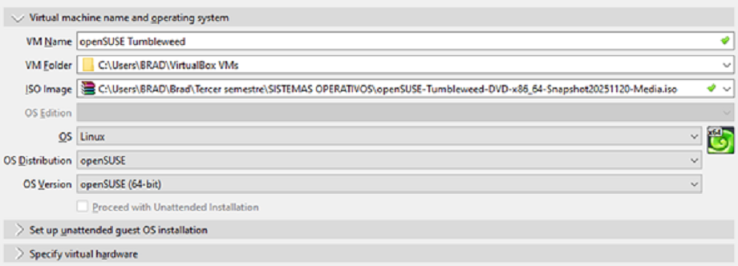Se establecen las caracteristicas de la maquina virtual
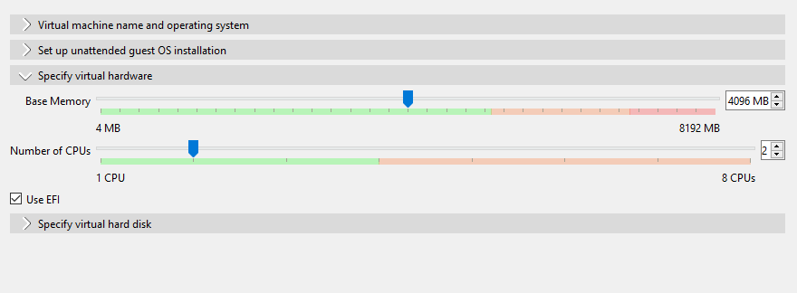 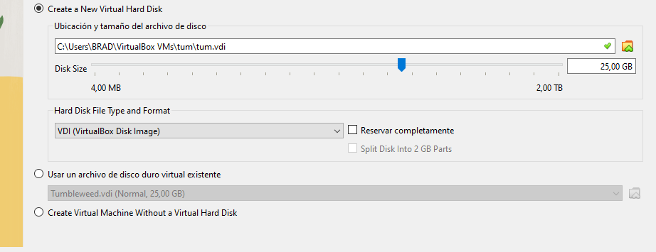
La configuración de red se hace desde opcion de configuracion en Virtualbox
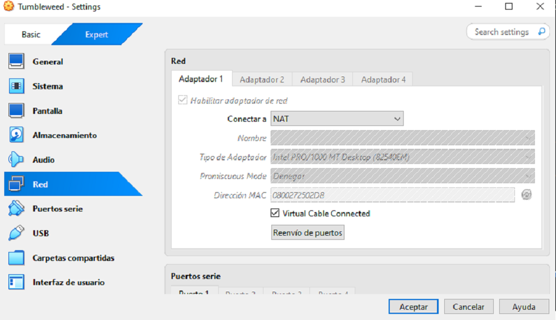
Se selecciona el idioma de preferencia
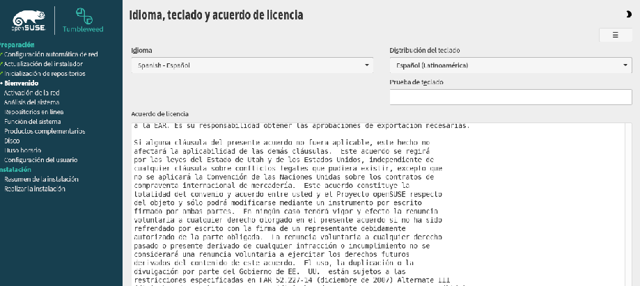
Se selecciona escritorio KDE plasma y el uso de repositorios en linea para la instalación
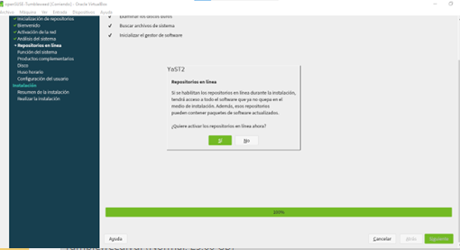 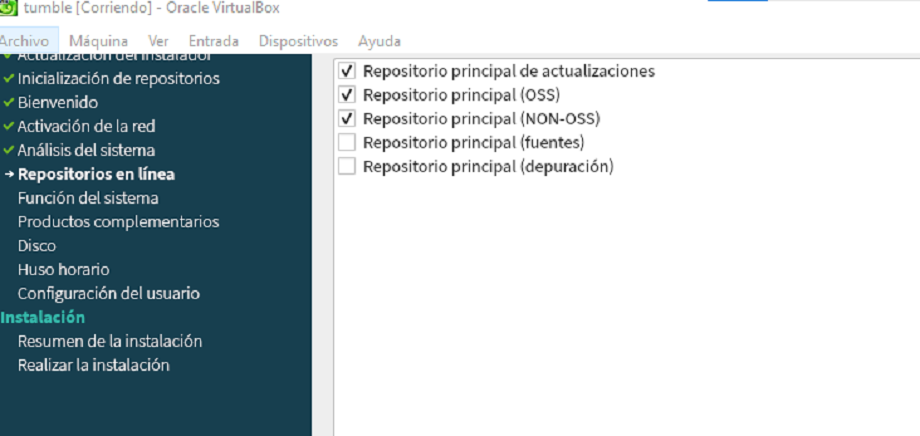
El esquema de particionado manual:
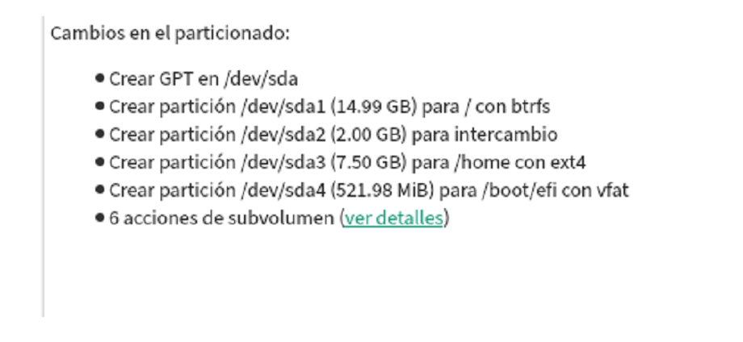
Se importa la llave gpg para instalar navegador Brave con "sudo rpm --import"
Se añade y actualiza el repositorio con "sudo zypper refresh" y"sudo zypper addrepo"
y se instala el navegador con sudo zypper install brave-browser
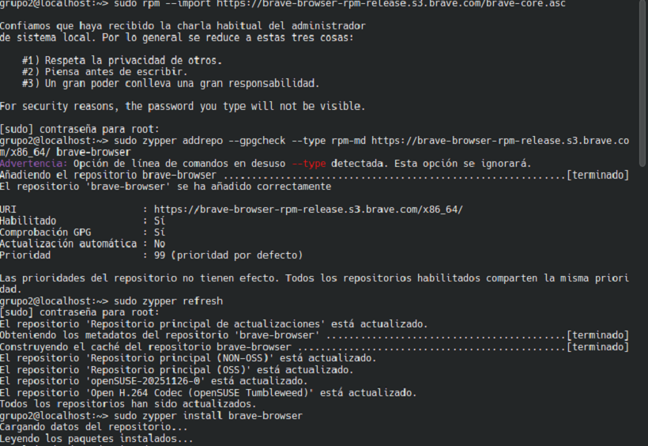
Se usa un comando similar para Firefox (en este caso ya estaba instalado)
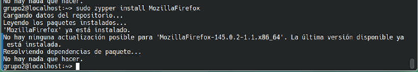
Para instalación de IDE's Visual Studio code y Spyder:
Para Visual Studio code se importa llave gpg, se refresca repositorio y se instala
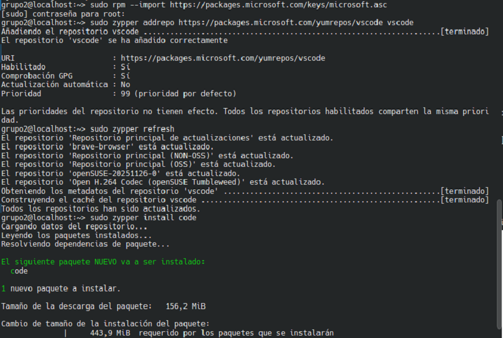 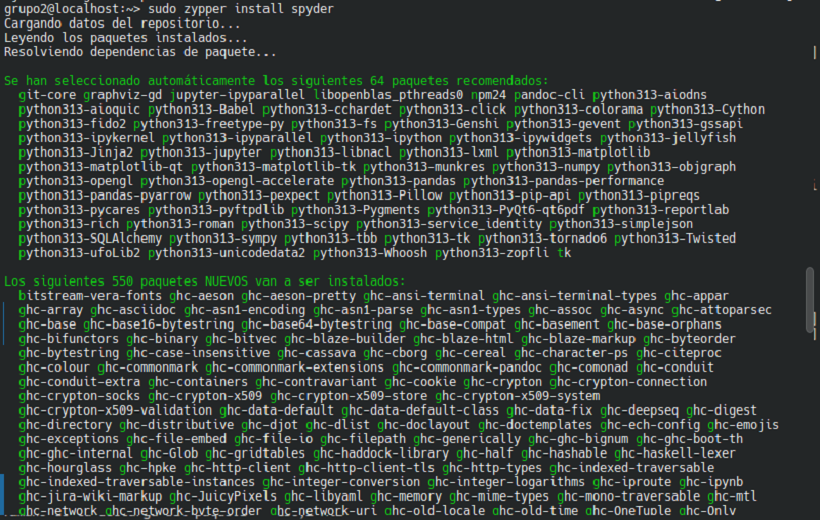 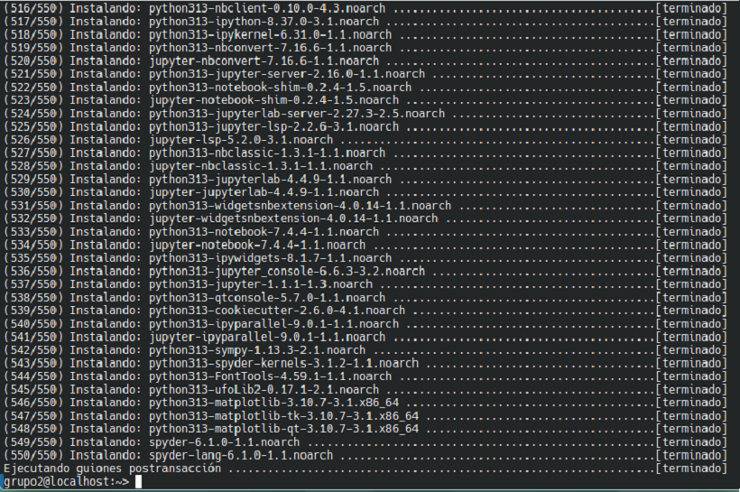Capturas navegadores y editores
Brave
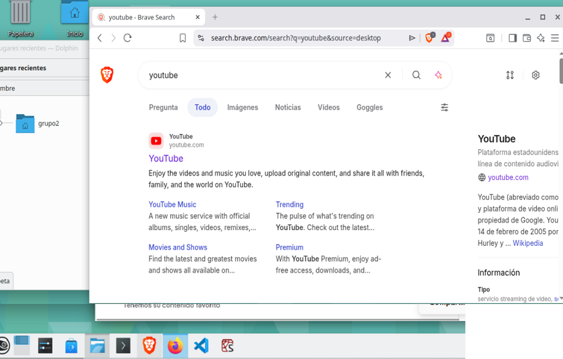Firefox
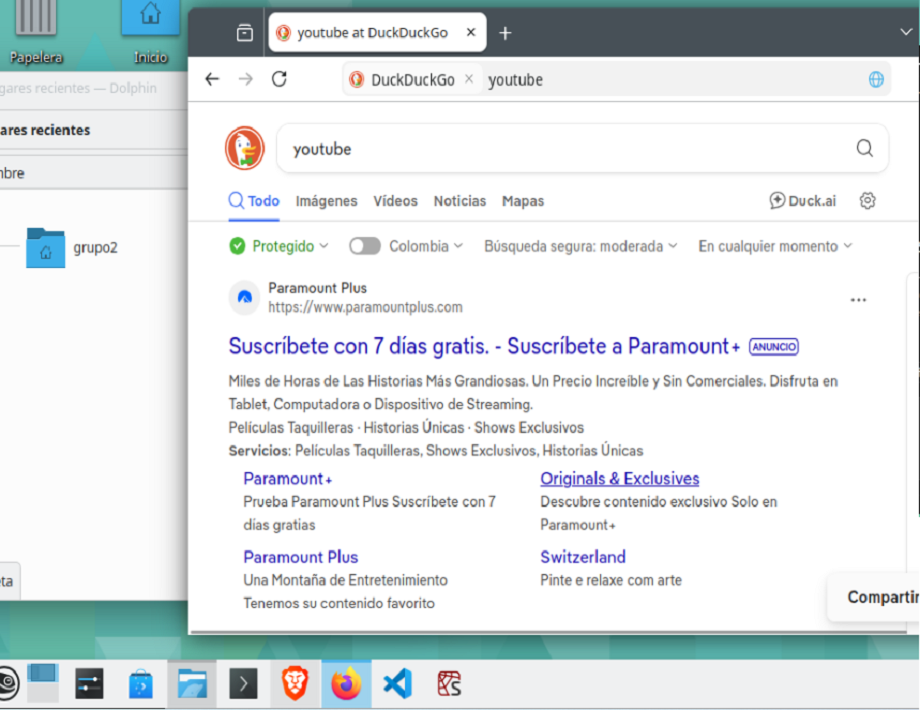Visual Studio Code
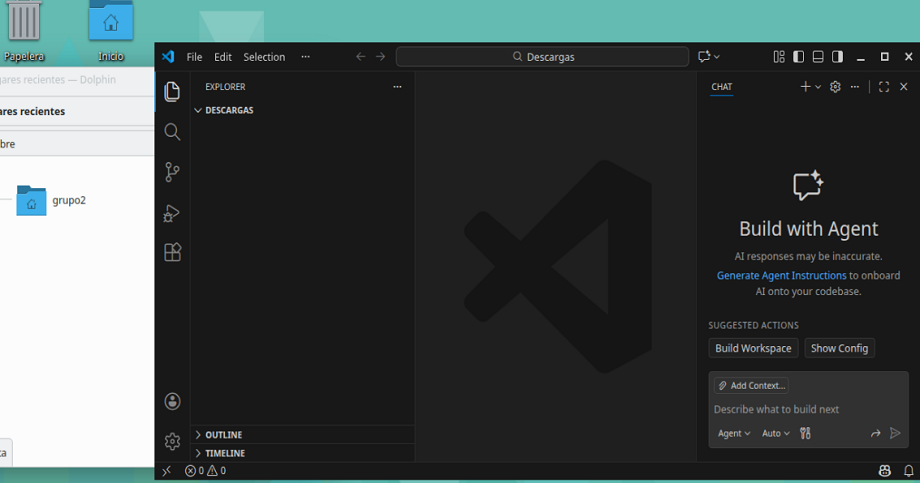Spyder
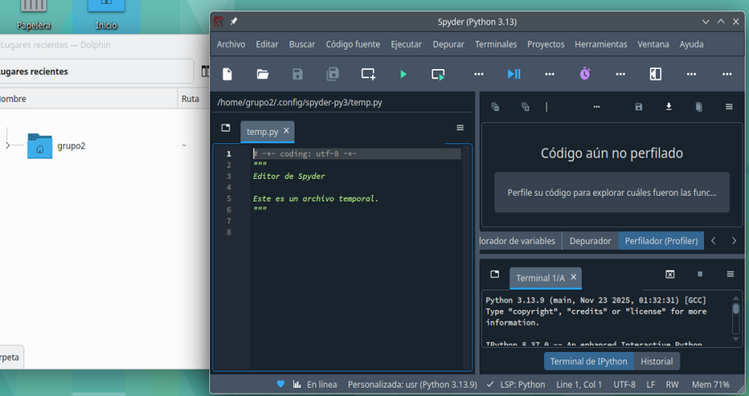
2. Instalación en Consola
Se monta la imagen iso de AlmaLinux y se configura la maquina virtual
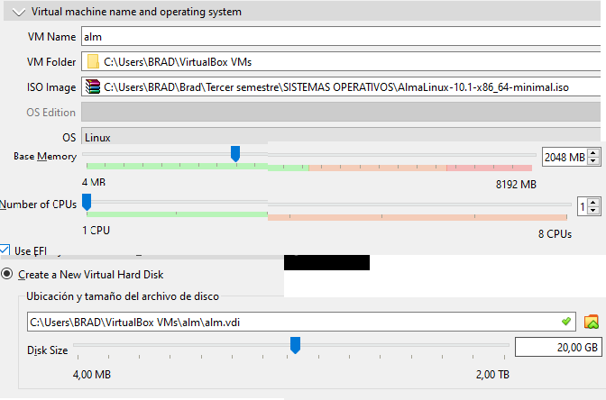Se selecciona la opción de instalación desde consola (instalación minima)
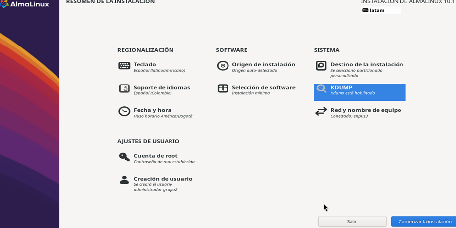Se configura el particionamiento manual del disco
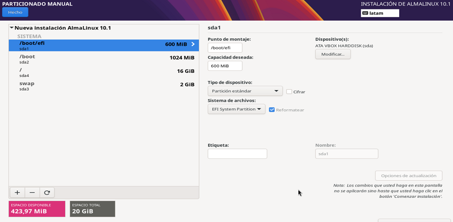Se verifica el estado de puertos y la conectividad a internet
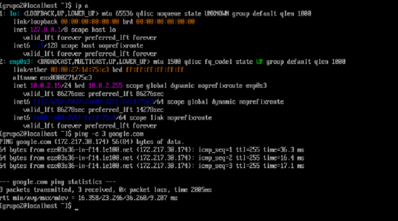Se verifica que el repositorio esté actualizado

Se instalan las herramienta (en este caso ya estaban instaladas):
make Herramienta esencial para compilar software desde el código fuente.
rsync Utilidad rápida y versátil para sincronizar archivos y directorios localmente o en red.
curl Herramienta para transferir datos con sintaxis de URL (necesaria para descargar archivos o interactuar con APIs).
git Sistema de control de versiones distribuido esencial para el desarrollo de software.
wget Utilidad de red para recuperar archivos desde servidores web (HTTP, HTTPS, FTP).

Confirmación de instalacion herramientas git make y curl
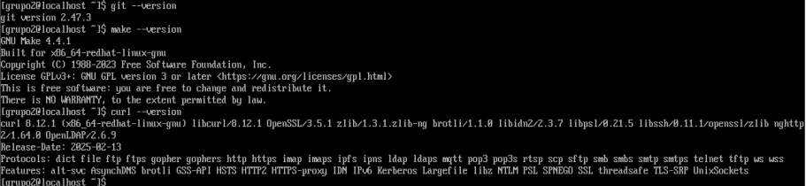Confirmación de instalacion herramienta rsync
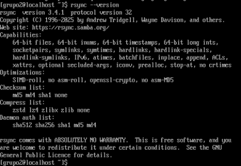Confirmación de instalacion herramienta wget
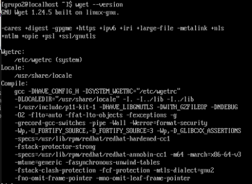